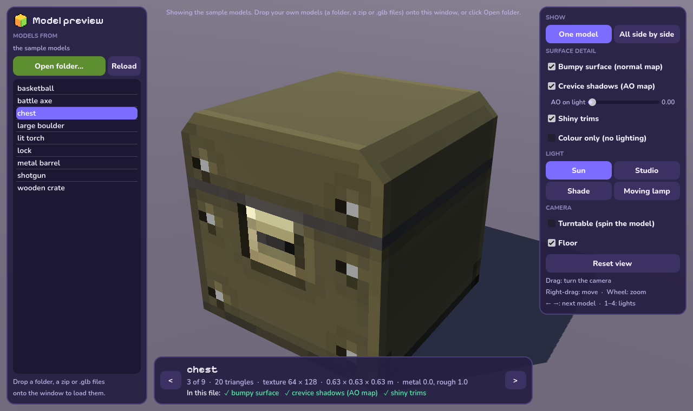
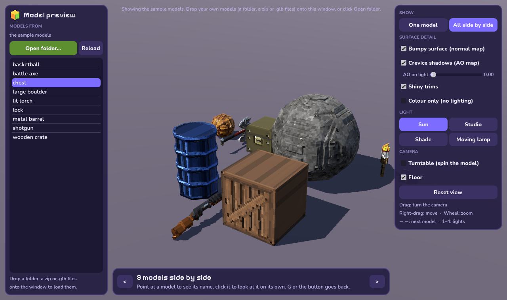
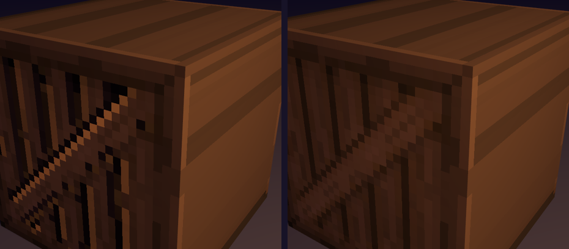
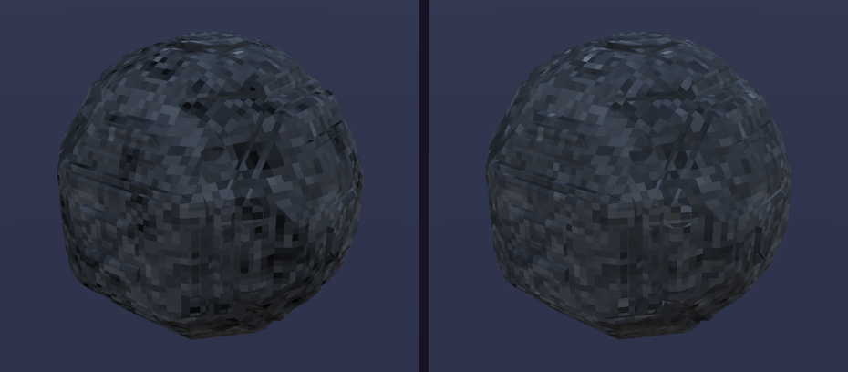
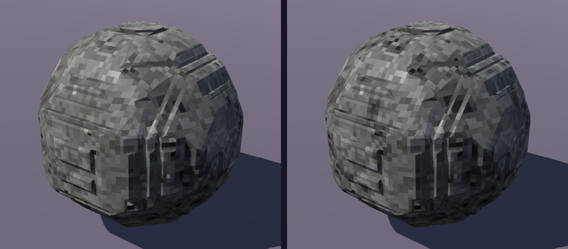
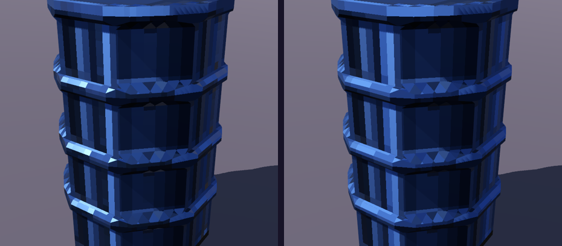
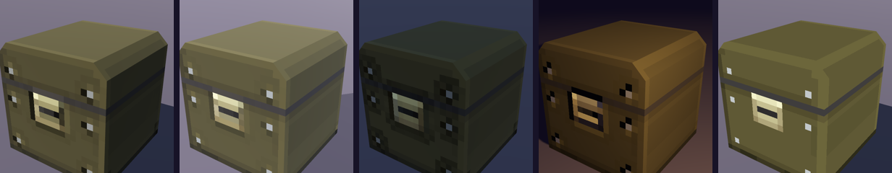
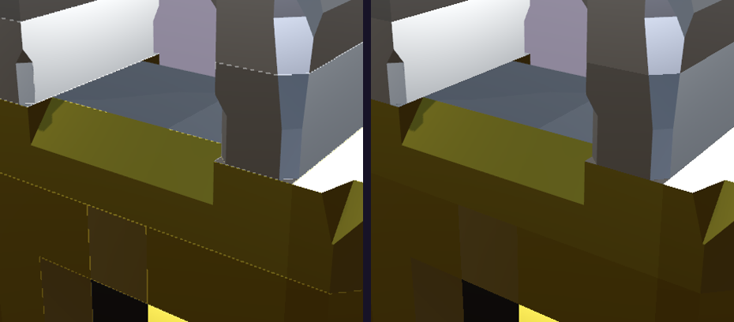

See your models in Godot
Pixel to 3D Batch Builder · model preview
This folder is a small Godot project that shows the models you export from Pixel to 3D under real game-engine lighting, with a switch for every bit of surface detail. You don't need to know Godot: download it, open this folder, press Play. It takes about five minutes the first time.

The preview window. It starts with nine sample models, so you can try it before exporting anything.
What you need
Godot 4.7 or newer
Free. No installer: it's a single program in a zip. Take the standard version, not the ".NET" one.
This folder
godot-preview, the folder this guide is in. Keep it somewhere you can find it; Godot will remember it.
Some exported models
Optional at first. In the app, go to ② and run it with 3D model ticked. You get .glb files (or a zip of them).
The first time: from download to models
-
Download Godot
Go to godotengine.org/download/windows and click the big download button for Godot Engine (not the one that says .NET).
-
Unzip it and start it
Right-click the downloaded zip, pick Extract All…, and open the new folder. Double-click the program called
Godot_v4.7…_win64.exe. If there's also a…_console.exe, ignore that one; it only adds a text window.Tip: move the extracted folder somewhere permanent (like Documents) and pin Godot to the taskbar, so it's easy to start next time.
-
Import this project
Godot opens its Project Manager, a list of projects (empty the first time). Click Import, then find this folder and pick the file
project.godotin it. Confirm with the Import button at the bottom of that window.Even quicker: drag the
godot-previewfolder (or itsproject.godot) from File Explorer onto the Project Manager window. -
Wait a moment while Godot opens it
The Godot editor opens. The first time, it spends a few seconds preparing the project's files (a progress bar), then shows a mostly empty 3D scene. That's fine: the viewer builds everything when it runs.
-
Press Play
At the top right of the editor, click the play arrow, ▶⏸■, or press F5. The preview opens in its own window with the sample models.
-
Load your own models
Drag your exported models onto the preview window. That's it. The next section has the other ways.
Next time it's quicker: start Godot, double-click Pixel to 3D model preview in the Project Manager, and press F5. (Or select it and click Run in the Project Manager to skip the editor.) The preview remembers the folder you loaded last and all your switches.
Three ways to load your models
The preview loads a whole batch at once, including sub-folders, so it works with "One folder per model" on or off. Nothing needs importing, and nothing is copied or changed.
Drop them on the window
Drag a folder, the zip the app downloads, or some .glb files from File Explorer onto the preview window.
Open folder…
The green button at the top left opens the normal Windows folder picker. Pick the folder you exported to.
The models folder
Put your models in godot-preview/models. If it has models in it, the preview always starts with them.
Exported new versions? Press Reload (or R) to load the same folder again.

All side by side (G) puts every model on the floor at once, at its real size. Point at one to see its name, click it to look at it on its own.
Moving around
| Drag with the left mouse button | Turn the camera around the model |
| Drag with the right (or middle) button | Move the camera sideways |
| Mouse wheel | Zoom in and out |
| ← →, or click the list | Previous and next model |
| G | One model ↔ all side by side |
| Space | Turntable: spins the models under the lights |
| 1 2 3 4 | Sun, Studio, Shade, Moving lamp |
| F | Reset the view |
| R | Reload the models |
Hover over any switch in the preview for a short explanation. The panel at the bottom says what the shown file actually holds (✓ or ✗ for each map), so you can tell a file without crevice shadows from a switch that's off.
The switches
These match the surface detail settings in the app's 3D model export card. Turning one off here doesn't change your files; it only lets you compare.
Bumpy surface (normal map)
The carved and embossed look from your chosen bump style. It shows best when light skims across the surface: try the Moving lamp or the turntable.

OnOffCrevice shadows (AO map)
Only for files exported with crevice shadows In the file (AO map). Godot uses this map to darken light from the sky and surroundings, not light from the sun or lamps, so it shows most in Shade and very little in bright sun. Shadows Painted into the texture are part of the colours instead and always show.

On (Shade light)OffAO on light is Godot's own material setting for how much the crevice shadows also darken sun and lamp light. Godot sets it to 0 for every model you import, so 0 is what your game shows unless you change it on the material. Slide it to 1 to see the difference:

AO on light 0 (Godot's default)AO on light 1Shiny trims
Makes the light trim pixels glossy (or metal), on top of the model's own Metal and Rough. Off, the whole model uses its own values. Look for the sharp highlights on the hoops:

OnOffColour only and the four lights
Colour only switches off all light and shading and shows just the texture. The lights: Sun is daylight from the upper left with a blue sky. Studio is three lamps in a dark room. Shade has no sun at all, only soft sky light (the place to judge crevice shadows). Moving lamp is a warm light circling the model in the dark, the best way to see the bumps.

Using the models in your own Godot game
Just drag the .glb files into Godot's FileSystem panel. Godot imports them with the crisp pixel look and every map already hooked up.
Crevice shadows under a bright sun need a higher AO on light on the material, as shown above. In Godot it's under the material's Ambient Occlusion section, called "Light Affect". Or export with crevice shadows Painted into the texture, which always shows.
Thin light lines along the pixels of shiny, bumpy models? That's Godot's Screen Space Roughness Limiter, which is on by default. It roughens the surface wherever the normal map changes sharply, and pixel-art normal maps change sharply at every pixel edge. Switch it off in Project → Project Settings → Rendering → Anti Aliasing (turn on "Advanced Settings" at the top right to see it). This preview has it off.

Limiter on (Godot's default)Limiter offMetal looks dark? Metal shows its colour by reflecting its surroundings. Under a sky (the Sun setup) it reads well; in a dark room with nothing to reflect it goes nearly black. That's real, not a fault in the file. Give your scene a sky or reflection probes, or use Dull metal / a lower Metal value.
If something goes wrong
| Godot says the project is for a newer version | Download Godot 4.7 or newer (step 1). |
| The window stays black or Godot closes straight away | Your graphics card may be too old for Godot's standard renderer. In the editor, click Forward+ at the top right and switch to Compatibility, then press F5 again. Updating your graphics driver also often helps. |
| "No models found" | That folder has no .glb files or zips in it (or in its sub-folders). Check that 3D model was ticked when you ran ② in the app. |
| A model is red in the list | Godot couldn't read that file. Export it again; the bottom panel says what went wrong. |
| I still see the old version of a model | Press Reload after exporting. |